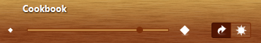
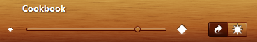
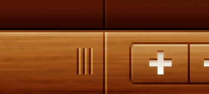

Unless you are using the exact same images that the designer was using for creating the screen mockups, the process of implementing the required visuals is hardly ever done. The slightest variations in color saturation, hues and brightness can result in a drab appearance. Not paying attention to artfully placed visual separators (gaps, margins, borders) can result in a cluttered appearance. Failing to remove visual noise that does not bother you as a programmer can result in visual distractions for the users, even at the unconscious level.
Here is a screenshot of the very first implementation of Cookbook UI header before all the visual tweaks introduced in the previous phases:
and here is the current implementation:
Here is a screenshot of the first implementation of Cookbook UI footer:
and here is the current implementation:
While the first two phases (analysis and mapping) operated on more abstract layers (decoration areas, functional areas, container hierarchy), the implementation phases (decoration and skin creation) must pay painstaking attention to all the minute details of the target design. Not closely following the design may seem insignificant to the developer, but it will in most cases result in deteriorated user experience.
The following is an incomplete list of Cookbook UI minute visuals that have been pointed out before. Most of these can be easily addressed with Substance painters and skins.
Here are two more examples of fine details that are easily missed at a cursory glance. The following is a zoomed screenshot of the seam between the sidebar and the footer area. The vertical separator has two lines, darker on the left and lighter on the right. The same appies to the horizontal separator. In addition, the horizontal separator is painted on top of the vertical one to further enforce the boundary between the application functional areas:
In the implementation, the vertical separators are painted as a custom border installed on the relevant panels. While this can be achieved with the decoration painter, in this specific case it is easier to use borders and supported Substance APIs (to fetch the color schemes). These borders are the only usage of Substance APIs outside the self-contained definition of the custom skin. This is an example of the tradeoff between containing the painting routines inside the skin definition and the limitations of the Substance skinning layer that impose greater complexity on implementing this specific feature.
The next screenshot shows a zoomed version of the buttons in one of the footers:
In addition to the details on the gradient fill and the double border, there is
one more important thing - the seamless appearance of the buttons as one joined
group. In order to implement this, i am using the
org.jvnet.flamingo.common.JCommandButtonStrip
component from Flamingo component suite
with the matching Substance plugin.
Buttons placed in the JCommandButtonStrip
will have continuous background, a single separator line between them and correct rounded
corners on the left / right buttons.
Using Flamingo also facilitates creation of custom icons for the header and footer buttons. In this case, i am using the offline Flamingo SVG transcoder to transcode a few icons from the Tango iconset to pure Java2D based classes. A combination of a few filters can make these icons white with a darker halo shade.
The process of defining, implementing and refining the visuals can take a few iterations until both sides (design and implementation) are satisfied with the results. In this process, paying attention to the work of the designer is as important as handling all the corner cases in the business logic. Indeed, a few ill-advised pixels or a drab color scheme are not going to bring your application down. However, if you are interested in providing an appealing and immersive flow to your users, it is most certainly worth extra few days of investment.